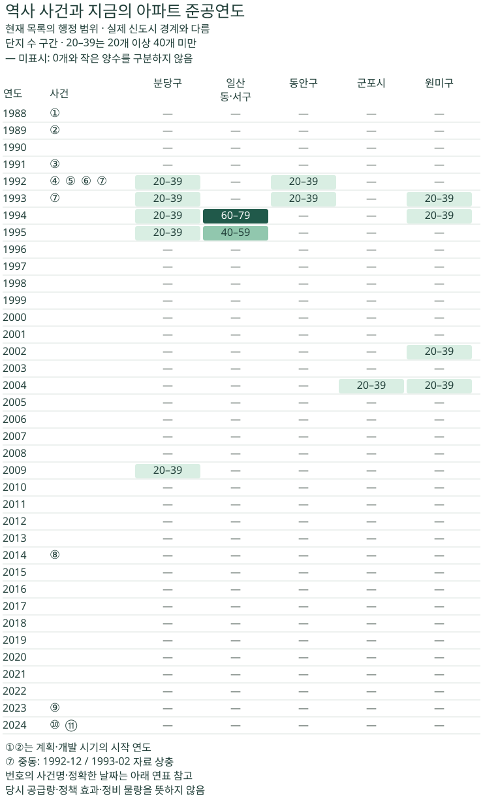

정비사업 숫자 읽기 · 개발 연혁과 현재 재고
1기 신도시 연표 1988–2024: 첫 입주와 준공연도
1988~2024년의 1기 신도시 개발·첫 입주·특별법·선도지구 연표를 현재 아파트의 연간 준공 분포와 비교합니다. 행정 범위와 신도시 경계, 중동 입주 날짜의 자료 상충을 구분해 읽습니다.
분석 기간 · 역사 사건과 준공연도 1988~2024년 | 자료 기준일 · 2026-10-02 수집 목록 · 역사 원문 대조 2026-10-21
분당·일산·평촌·산본·중동의 첫 입주 시기와, 그 지역에서 지금 찾아볼 수 있는 아파트의 준공연도는 같은 통계일까요? 첫 입주는 도시 개발의 한 사건이고, 현재 목록의 준공연도 분포는 지금 수집된 아파트가 언제 지어졌는지를 보여줍니다. 1988~2024년의 주요 연혁과 다섯 행정 범위의 연간 분포를 같은 축에 놓고 차이를 읽어봅니다.
신도시 이름과 집계한 행정 범위는 다릅니다
역사 연표는 다섯 신도시의 개발·입주와 관련 제도를 다룹니다. 준공연도 집계는 성남시 분당구, 고양시 일산동구·일산서구 합계, 안양시 동안구, 군포시 전체, 부천시 원미구를 사용합니다. 익숙한 신도시 이름으로 열 제목을 바꾸지 않았습니다. 실제 신도시 경계 안의 아파트를 빠짐없이 조사한 결과가 아니기 때문입니다.
비교하는 날짜도 다릅니다. 전국 주택 건설 계획의 기간, 신도시 개발 시기, 첫 입주 월, 법 공포일, 법 시행일, 선도지구 선정일을 나눴습니다. 예를 들어 200만 호는 전국 계획의 숫자이며 다섯 신도시의 공급량이 아닙니다. 선도지구 선정은 새 아파트의 착공이나 입주 완료가 아닙니다.
같은 연도축에 놓으면 두 종류의 기록을 구별할 수 있습니다
왼쪽 번호는 아래 연표의 사건이 속한 연도입니다. 오른쪽 다섯 열은 현재 수집 목록에서 해당 준공연도가 확인된 단지 수의 구간입니다. 숫자가 적힌 칸만 골라 연도를 압축하지 않고, 1988년부터 2024년까지 같은 간격을 유지했습니다.

같은 해의 칸 옆에 정책 번호가 있다고 해서 그 정책으로 해당 아파트가 지어졌다는 뜻은 아닙니다. 그림은 날짜를 함께 읽는 도구이며 개별 단지의 정책 적용 이력을 연결한 분석이 아닙니다.
전국 주택 계획부터 특별법·선도지구까지의 주요 연표
| 그림 번호·시점 | 확인한 기록 | 날짜의 의미·출처 |
|---|---|---|
| ① 1988~1992년 | 전국 주택 200만 호 건설 계획 기간 | 다섯 신도시만의 주택 수가 아닙니다. 그림의 1988년은 계획 기간의 시작입니다. 정책브리핑의 2007년 회고 |
| ② 1989~1996년 | 국가기록원이 구분한 1기 신도시 개발 시기 | 분당·일산·평촌·산본·중동을 설명한 시대 구분입니다. 다섯 도시의 모든 지정·승인이 1989년에 이뤄졌다는 뜻은 아닙니다. 국가기록원 신도시개발 |
| ③ 1991년 9월 | 분당 최초 입주 기재 | 국토연구원 WP22-08 표 1(PDF 5쪽)과 2007년 회고가 같은 월을 제시합니다. |
| ④ 1992년 3월 | 평촌 최초 입주 기재 | 국토연구원 표 1과 2007년 회고가 일치합니다. |
| ⑤ 1992년 4월 | 산본 최초 입주 기재 | 국토연구원 표 1과 2007년 회고가 일치합니다. |
| ⑥ 1992년 8월 | 일산 최초 입주 기재 | 국토연구원 표 1과 2007년 회고가 일치합니다. |
| ⑦ 1992년 12월 / 1993년 2월 | 중동 최초 입주 기재 상충 | 2007년 회고는 1992년 12월, 2022년 국토연구원 표 1은 1993년 2월입니다. 이 글에서는 최초 날짜를 확정하지 않습니다. |
| ⑧ 2014년 4월 25일 | 수직증축 리모델링 허용 시행 | 4월 22일 발표와 시행일을 구분했습니다. 당시 제도 변화의 기록입니다. 국토교통부 발표 |
| ⑨ 2023년 12월 26일 | 노후계획도시 특별법 제정·공포 | 법률 제19847호의 공포 시점이며 시행일과 다릅니다. 국가법령정보센터 제정문·부칙 |
| ⑩ 2024년 4월 27일 | 노후계획도시 특별법 시행 | 4월 25일 보도자료 게시일을 시행일로 쓰지 않았습니다. 국토교통부 시행 안내와 제정 부칙 |
| ⑪ 2024년 11월 27일 | 1기 신도시 선도지구 선정 발표 | 선정된 사업의 이주·착공·준공 완료일이 아닙니다. 당일 KTV 보도는 발표와 앞으로의 계획을 구분해 전합니다. |
중동의 두 날짜를 하나로 정리하지 않았습니다. 자료가 달리 적힌 이유가 단계별 입주 때문인지도 이 자료만으로 확인할 수 없습니다. 국토연구원 표는 한국토지공사의 1997년 자료를 참고해 저자가 작성한 표입니다. 개별 단지의 당시 입주 공고를 직접 전수 확인한 기록과는 구분해야 합니다.
이 연표는 2024년까지의 역사입니다. 그 뒤의 사업 진행 상황이나 현재 법 적용 요건을 그대로 대신하지 않습니다. 적용 대상의 범위와 계획구역을 읽는 방법은 노후계획도시 특별법의 요건과 대상 규모에서 이어서 확인할 수 있습니다.
현재 수집 목록에서는 어느 준공연도가 눈에 띌까요?
아래 표는 정규 단지를 한 곳씩 셉니다. 건물 동 수·주택 호수·거래 건수·정비사업 구역 수가 아닙니다. 20–39개는 정수 건수의 범위이며, ‘미표시’ 칸의 실제 값에는 0개와 작은 양수가 함께 포함될 수 있습니다.
| 준공연도 | 분당구 | 일산동·서구 | 동안구 | 군포시 | 원미구 |
|---|---|---|---|---|---|
| 1992 | 20–39개 | 미표시 | 20–39개 | 미표시 | 미표시 |
| 1993 | 20–39개 | 미표시 | 20–39개 | 미표시 | 20–39개 |
| 1994 | 20–39개 | 60–79개 | 미표시 | 미표시 | 20–39개 |
| 1995 | 20–39개 | 40–59개 | 미표시 | 미표시 | 미표시 |
| 2002 | 미표시 | 미표시 | 미표시 | 미표시 | 20–39개 |
| 2004 | 미표시 | 미표시 | 미표시 | 20–39개 | 20–39개 |
| 2009 | 20–39개 | 미표시 | 미표시 | 미표시 | 미표시 |
1988~2024년 전체 표 펼치기
| 준공연도 | 분당구 | 일산동·서구 | 동안구 | 군포시 | 원미구 |
|---|---|---|---|---|---|
| 1988 | 미표시 | 미표시 | 미표시 | 미표시 | 미표시 |
| 1989 | 미표시 | 미표시 | 미표시 | 미표시 | 미표시 |
| 1990 | 미표시 | 미표시 | 미표시 | 미표시 | 미표시 |
| 1991 | 미표시 | 미표시 | 미표시 | 미표시 | 미표시 |
| 1992 | 20–39개 | 미표시 | 20–39개 | 미표시 | 미표시 |
| 1993 | 20–39개 | 미표시 | 20–39개 | 미표시 | 20–39개 |
| 1994 | 20–39개 | 60–79개 | 미표시 | 미표시 | 20–39개 |
| 1995 | 20–39개 | 40–59개 | 미표시 | 미표시 | 미표시 |
| 1996 | 미표시 | 미표시 | 미표시 | 미표시 | 미표시 |
| 1997 | 미표시 | 미표시 | 미표시 | 미표시 | 미표시 |
| 1998 | 미표시 | 미표시 | 미표시 | 미표시 | 미표시 |
| 1999 | 미표시 | 미표시 | 미표시 | 미표시 | 미표시 |
| 2000 | 미표시 | 미표시 | 미표시 | 미표시 | 미표시 |
| 2001 | 미표시 | 미표시 | 미표시 | 미표시 | 미표시 |
| 2002 | 미표시 | 미표시 | 미표시 | 미표시 | 20–39개 |
| 2003 | 미표시 | 미표시 | 미표시 | 미표시 | 미표시 |
| 2004 | 미표시 | 미표시 | 미표시 | 20–39개 | 20–39개 |
| 2005 | 미표시 | 미표시 | 미표시 | 미표시 | 미표시 |
| 2006 | 미표시 | 미표시 | 미표시 | 미표시 | 미표시 |
| 2007 | 미표시 | 미표시 | 미표시 | 미표시 | 미표시 |
| 2008 | 미표시 | 미표시 | 미표시 | 미표시 | 미표시 |
| 2009 | 20–39개 | 미표시 | 미표시 | 미표시 | 미표시 |
| 2010 | 미표시 | 미표시 | 미표시 | 미표시 | 미표시 |
| 2011 | 미표시 | 미표시 | 미표시 | 미표시 | 미표시 |
| 2012 | 미표시 | 미표시 | 미표시 | 미표시 | 미표시 |
| 2013 | 미표시 | 미표시 | 미표시 | 미표시 | 미표시 |
| 2014 | 미표시 | 미표시 | 미표시 | 미표시 | 미표시 |
| 2015 | 미표시 | 미표시 | 미표시 | 미표시 | 미표시 |
| 2016 | 미표시 | 미표시 | 미표시 | 미표시 | 미표시 |
| 2017 | 미표시 | 미표시 | 미표시 | 미표시 | 미표시 |
| 2018 | 미표시 | 미표시 | 미표시 | 미표시 | 미표시 |
| 2019 | 미표시 | 미표시 | 미표시 | 미표시 | 미표시 |
| 2020 | 미표시 | 미표시 | 미표시 | 미표시 | 미표시 |
| 2021 | 미표시 | 미표시 | 미표시 | 미표시 | 미표시 |
| 2022 | 미표시 | 미표시 | 미표시 | 미표시 | 미표시 |
| 2023 | 미표시 | 미표시 | 미표시 | 미표시 | 미표시 |
| 2024 | 미표시 | 미표시 | 미표시 | 미표시 | 미표시 |
분당구는 1992~1995년이 각각 20개 이상 40개 미만이고, 2009년도 같은 구간입니다. 첫 입주 이후의 여러 준공연도가 현재 목록에 남아 있음을 읽을 수 있습니다. 같은 표시 구간에 있다고 해서 실제 단지 수가 같다는 뜻은 아닙니다.
일산동·서구는 1994년 60개 이상 80개 미만, 1995년 40개 이상 60개 미만입니다. 두 구간 사이의 크기 차이는 읽을 수 있지만 정확한 차이나 공급 세대수의 차이는 알 수 없습니다. 도시별 첫 입주 월을 해당 행정구역 전체의 단일 준공연도로 바꾸어 읽지 않는 이유입니다.
군포시는 2004년 한 행만 구간이 표시됩니다. 산본의 역사적 입주 파고를 복원한 그래프라고 부를 수 없습니다. 행정 범위가 다르고, 단지를 한 곳씩 센 값은 세대수 가중 값과도 다릅니다. 1990년대 아파트 비중을 단지 수와 확인 세대수로 비교한 글에서 두 분모를 함께 살펴보세요.
당시 공급량과 정책 효과로 읽을 수 없는 이유
현재 목록은 과거의 전수 공급 실적이 아닙니다. 수집에서 빠진 단지, 준공연도 미상, 이미 멸실됐거나 다른 형태로 바뀐 단지를 모두 복원하지 못했습니다. 현재 목록의 한 행을 당시 준공 통계의 한 행으로 대체할 수 없습니다.
지역과 세는 단위를 바꾸면 다른 질문이 됩니다. 산본과 군포시, 중동과 원미구의 경계는 같지 않습니다. 작은 단지와 큰 단지를 한 곳씩 세는 분포도 확인 세대수를 더한 분포와 다릅니다. 다른 원천 조건이나 더 넓은 시 범위를 검토했더라도, 그 결과를 지금 표와 같은 모집단이라고 합치지 않았습니다.
시간상 가까운 사건만으로 인과를 설명하지 않습니다. 특정 법 시행 전후의 연간 단지 수를 비교해 그 법의 효과라고 말하려면 실제 적용 사업, 시작 시점과 다른 조건을 따로 확인해야 합니다. 이 그림에는 그런 개별 연결이 없습니다. 2024년의 선정 발표를 이후 재건축 공급량이나 입주 시점으로 환산하지 않습니다.
1988년 이전·2024년 이후와 준공연도 미상은 그림 밖에 있습니다. 표의 모든 칸을 합쳐도 현재 아파트 전체나 역사적 공급 총계가 되지 않습니다. 빈 칸을 0으로 채우거나 표시 구간의 중간값으로 연도별 증가율을 계산하지 않았습니다.
관심 단지에서는 경계·사건·날짜를 맞춰 보세요
- 경계를 확인합니다. 기사에 적힌 신도시 이름, 행정구역, 실제 계획구역 중 어느 범위인지 구분합니다. 관심 단지의 주소가 그 범위에 포함되는지 확인합니다.
- 사건의 이름을 적습니다. 계획 발표, 법 공포·시행, 선도지구 선정, 개별 사업의 인가·착공·준공 중 무엇인지 확인합니다. 기사 게시일을 사건일로 바꾸지 않습니다.
- 단지의 날짜를 따로 찾습니다. 건축물대장의 사용승인일과 실제 입주 안내를 확인합니다. 신도시 전체의 첫 입주 월이나 목록의 준공연도만으로 관심 단지의 입주일을 확정하지 않습니다.
한 사업에서 인가·이주·철거·입주가 어떻게 다른 날짜로 나타나는지는 재개발·재건축 절차와 거래·거주 시점을 함께 읽어 보세요. 도시 개발의 연혁과 지금 진행 중인 사업의 단계가 분리됩니다.
원천·집계 범위·표시 기준 펼치기
역사 자료는 국가기록원, 정책브리핑의 정부 발표·회고, KTV, 국가법령정보센터와 국토연구원 보고서를 2026년 10월 20일 취득하고 10월 21일 주장별로 다시 대조했습니다. 국토연구원 WP22-08의 표 1은 PDF의 5쪽입니다. 날짜가 월까지만 있는 기록에 임의의 일을 붙이지 않았으며, 중동의 두 날짜는 미확정으로 남겼습니다.
준공연도는 2026년 10월 2일까지 수집한 현재 아파트 목록의 단지 구분·본적 지역·건축연도를 사용했습니다. 실제 신도시 경계나 역사적 입주 명부와 연결한 집계가 아닙니다. K-apt 기본정보와 건축HUB 건축물대장정보를 포함한 기존 원천의 선택·연결 기준을 유지했습니다. 연간 값은 별도 집계 방식으로 대조했습니다.
해당 연도 단지가 20곳 이상, 그 지역의 정상연도 확인 목록 중 나머지가 20곳 이상, 전체가 40곳 이상일 때 20단지 폭 구간을 표시합니다. 정상연도는 1900~2026년의 정수이며, 그림은 그중 1988~2024년입니다. 기준을 넘지 못한 칸은 미표시입니다. 이 기준은 역사적 전수성이나 대표성을 보증하지 않습니다.
예를 들어 20–39개는 하한 20을 포함하고 상한 40을 포함하지 않는 구간입니다. 정확한 연간 단지 수·세대수·개별 식별자·가격을 제공하지 않습니다. 구간을 정확한 단지 수나 공급 세대수로 바꿔 계산하지 않습니다.
공개 연간 구간(JSON)에는 다섯 범위의 모든 연도와 미표시가 보존되어 있습니다. 역사적 공급량, 정책 효과, 재건축 대상 규모나 미래 이주 일정은 담지 않습니다.
분석·집필: 파파펭귄 (Nobot Kang). 에이전트로 공식 원문 대조·집계 검산·표시 범위 검토·그림 생성과 초안 작성을 보조했습니다.